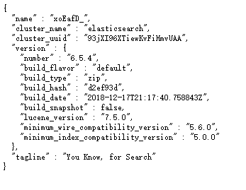
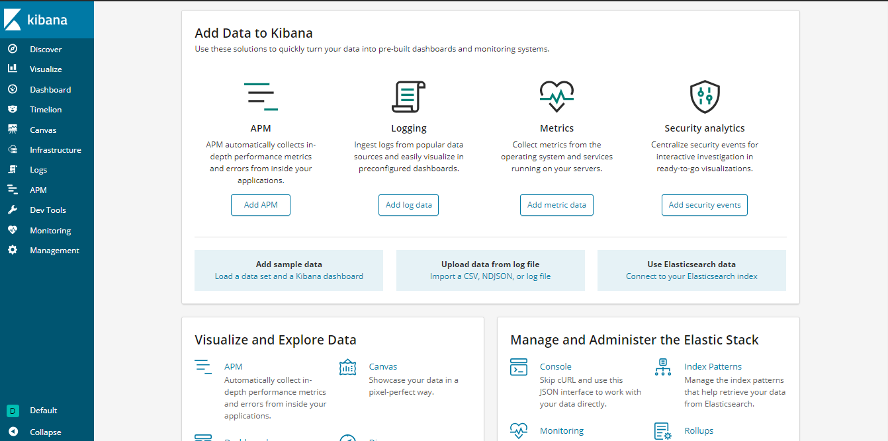

摘要
本文记述了作者基于ELK建立社工库时获得的收获。
关键词: ELK；社工库；
持续更新中
版本
logstash版本：logstash-6.5.4
elasticsearch版本：elasticsearch-6.5.4
kibana版本：kibana-6.5.4-windows-x86_64
nssm版本：nssm-2.24
Java版本：jdk-8
Kettle Spoon：Kettle Spoon 8.2 Stable
ELK部署
关于版本选择
时至2020-4-5，ELK最新版本其实应该是ELK-7.6.1，但是此版本要求JDK11，作者因为其他软件要求JDK8，所以就降低了一些ELK版本，选择了适合JDK8的ELK-6.5.4。
Elasticsearch部署
正常安装
运行 elasticsearch-6.5.4\bin\elasticsearch.bat 。打开 http://localhost:9200 看到下图情境即运行成功：

问题解决
运行 elasticsearch-6.5.4\bin\elasticsearch.bat ，出现了：
1 | 此时不应有 \Java\jdk1.8.0_192\bin\java.exe" -cp "!ES_CLASSPATH!" "org.elasticsearch.tools.launchers.JvmOptionsParser" "!ES_JVM_OPTIONS!" || echo jvm_options_parser_failed"` )。 |
文件 elasticsearch-6.5.4\bin\elasticsearch.bat 中的此段代码无法运行：
1 | for /F "usebackq delims=" %%a in ( `"%JAVA% -cp "!ES_CLASSPATH!" "org.elasticsearch.tools.launchers.JvmOptionsParser" "!ES_JVM_OPTIONS!" || echo jvm_options_parser_failed"` ) do set JVM_OPTIONS=%%a |
改为以下形式即可：
1 | for /F "usebackq delims=" %%a in ( `CALL %JAVA% -cp "!ES_CLASSPATH!" "org.elasticsearch.tools.launchers.JvmOptionsParser" "!ES_JVM_OPTIONS!" ^|^| echo jvm_options_parser_failed` ) do set JVM_OPTIONS=%%a |
解决之后，再次运行程序报错：
1 | ElasticsearchException[X-Pack is not supported and Machine Learning is not available for [windows-x86]; you can use the other X-Pack features (unsupported) by setting xpack.ml.enabled: false in elasticsearch.yml] |
只需要在 elasticsearch-6.5.4\config\elasticsearch.yml 添加一条配置即可：
1 | xpack.ml.enabled: false |
kibana部署
在运行Elasticsearch后直接运行 \kibana-6.5.4-windows-x86_64\bin\kibana.bat 即可。正常运行的界面如下：

ELK日常运行
因为作者把ELK装在移动硬盘上的，所以网络上将ELK用nssm封装成自动启动服务的方式并不适合作者。作者就写了批处理bat脚本来控制ELK的运行的和关闭。
1 | REM startELK.bat |
1 | REM startELK.bat |
Kettle数据格式化
Kettle 介绍
Kettle是一款国外开源的ETL工具，纯java编写，可以在Window、Linux、Unix上运行，数据抽取高效稳定。ELT的全称为Extraction, Transformation Loading，其中文解释为提取，转换和加载。Kettle这个工具里面有SPOON，PAN，CHEF，Encr和KITCHEN这么五个基本组建。[1]
SPOON 允许你通过图形界面来设计ETL转换过程（Transformation）。
PAN 允许你批量运行由Spoon设计的ETL转换 (例如使用一个时间调度器)。Pan是一个后台执行的程序，没有图形界面。
CHEF 允许你创建任务（Job）。 任务通过允许每个转换，任务，脚本等等，更有利于自动化更新数据仓库的复杂工作。任务通过允许每个转换，任务，脚本等等。任务将会被检查，看看是否正确地运行了。
KITCHEN 允许你批量使用由Chef设计的任务 (例如使用一个时间调度器)。KITCHEN也是一个后台运行的程序。
Encr 此脚本是用来加密连接数据库密码与集群时使用的密码
Kettle spoon部署
直接运行 spoon.bat 即可。
如果运行时打不开，或者一闪而过，修改 spoon.bat 如下语句：
1 | if "%PENTAHO_DI_JAVA_OPTIONS%"=="" set PENTAHO_DI_JAVA_OPTIONS="-Xms1024m" "-Xmx2048m" "-XX:MaxPermSize=256m" |
改为：
1 | if "%PENTAHO_DI_JAVA_OPTIONS%"=="" set PENTAHO_DI_JAVA_OPTIONS="-Xms512m" "-Xmx1024m" "-XX:MaxPermSize=256m" |